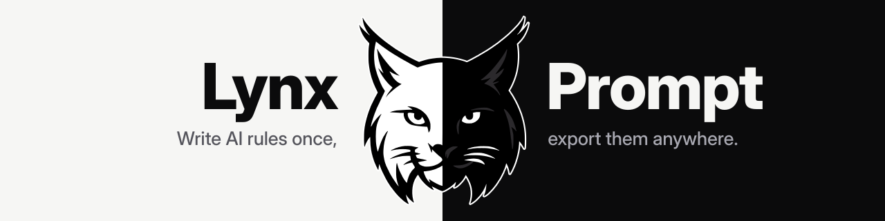
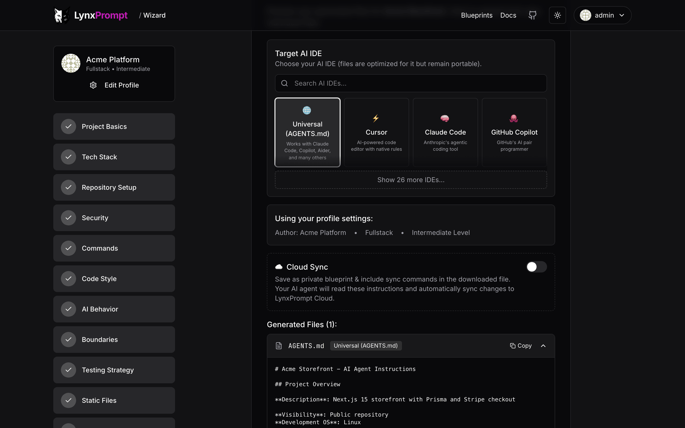
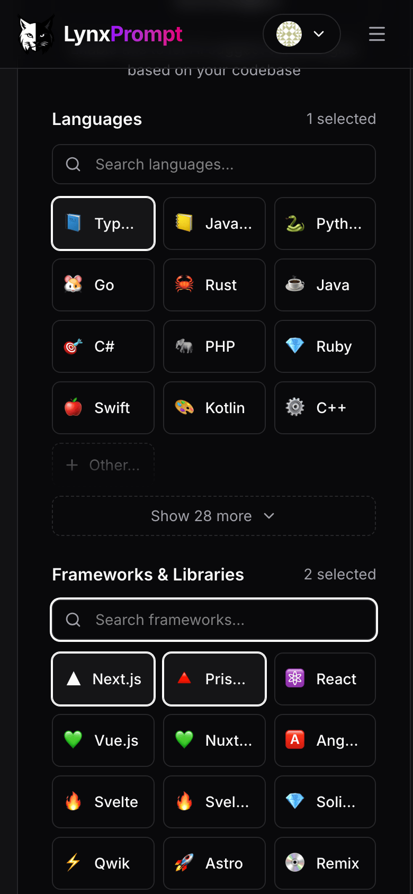
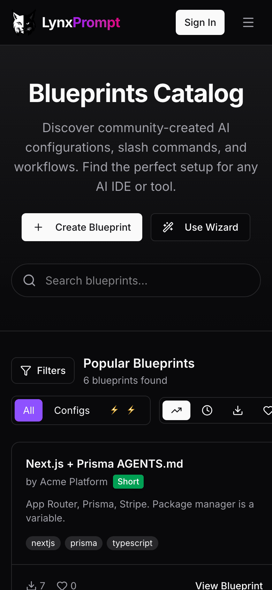
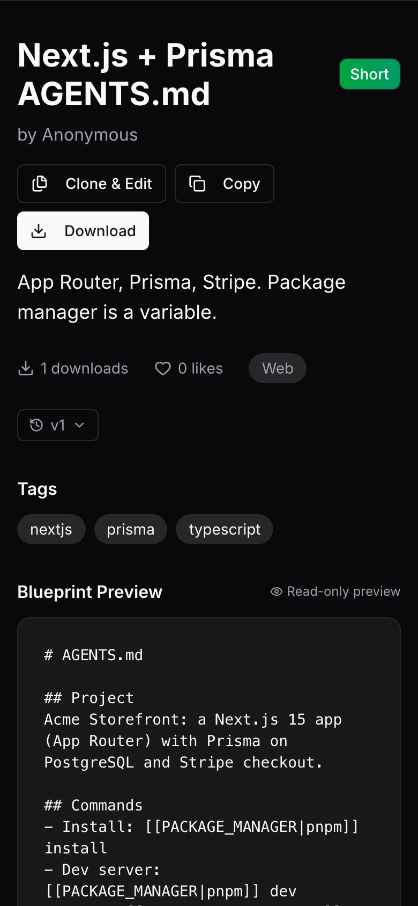

LynxPrompt¶



LynxPrompt is a self-hosted web app that turns one set of AI coding rules into the file each tool reads: AGENTS.md, CLAUDE.md, .cursor/rules/, Copilot instructions, 30 rule-file formats in all, plus slash commands for six of them. A wizard writes the rules from your stack, blueprints let a team share them with variables, and the CLI and the VS Code extension put the files into every repository.
This site is about running your own instance: start with Docker Compose, then the settings, the CLI and how it is built. The product manual (the wizard step by step, blueprints, the CLI and API reference) is a separate site at lynxprompt.com/docs, and lynxprompt.com is a hosted instance you can try without installing anything.
-
Three commands start the app and PostgreSQL, and the Mailpit link signs you in. A Helm chart covers Kubernetes.
-
How the magic link works, how to read it without a mail server, and what the dashboard looks like when it worked.
-
The CLI and the VS Code extension
lynxp wizard,pull,pushanddiffagainst your instance, and the same from inside VS Code. -
Every setting with its default, and the five you need for sign-in.
The web app¶
The wizard asks about the project, the stack, the commands, the code style and the boundaries, then writes the files for the tools you pick. Usage walks through the wizard, the blueprint pages, the dashboard and teams.




What it does¶
- Exports one set of rules as the rule file of 30 tools:
AGENTS.md, Cursor, Claude Code, Copilot, Windsurf, Zed, Aider, Gemini CLI, Cline, Roo Code, Amazon Q, JetBrains Junie and the rest of the list in Features, plus slash commands for Cursor, Claude Code, Windsurf, Copilot, Continue and OpenCode. - Builds those rules in a 12-step wizard on the web, or with
lynxp wizardin a terminal;lynxp analyzereads an existing repository first. - Keeps blueprints with
[[VARIABLE|default]]placeholders, so one blueprint fits many projects. Each blueprint is private, shared with a team, or public. - Gives a team its own page and its own blueprints. Federation lets instances that join share their public blueprints with each other.
- Manages hierarchical
AGENTS.mdfiles for monorepos, from the dashboard, the CLI (lynxp hierarchies) and the API. - Serves the same data to the CLI, the VS Code extension and a REST API with per-token roles.
- Signs users in with a magic link, passkeys, GitHub or Google OAuth, or SAML, OIDC and LDAP SSO; each is one environment variable.
- Edits blueprints with Claude when you set your own Anthropic API key; off by default, and everything else works without it.
How it runs¶
flowchart LR
BR[Browser]
CLI[lynxp CLI<br/>VS Code extension<br/>GitHub Action]
subgraph app [lynxprompt container, port 3000]
WEB[Next.js app and API]
MIG[prisma db push on start]
end
DB[(PostgreSQL<br/>app, users, blog, support schemas)]
SMTP[Your SMTP server<br/>sign-in mail]
OPT[Optional: GitHub or Google OAuth,<br/>SSO provider, Anthropic API, Stripe]
FED[Other instances<br/>public blueprints]
BR <--> WEB
CLI <-->|API token| WEB
WEB --> DB
MIG --> DB
WEB --> SMTP
WEB -.-> OPT
WEB <-.-> FED- The image is
drumsergio/lynxprompt, built for linux/amd64, running as user id 1001. On an ARM host (Apple Silicon, Raspberry Pi) the compose file'splatform: linux/amd64line runs it under emulation. - Migrations run every time the container starts (
prisma db pushon the four schemas), so an upgrade is a tag change anddocker compose up -d. - The self-host compose file runs one PostgreSQL server with one database per schema (
lynxprompt,lynxprompt_users,lynxprompt_blog,lynxprompt_support). See Components. - The CLI and the extension talk to
/api/v1/with an API token you create in Settings. See How it works.
What it does not do¶
- It does not send mail by itself. The default login is a magic link, so a real deployment needs the five
SMTP_*variables; the Mailpit file is only for trying it out. - It does not run your AI tools. It writes the files they read.
- It does not edit with AI unless you give it an Anthropic API key.
- It does not ship an ARM image; ARM hosts run the amd64 image under emulation, which is slower.
Privacy¶
- Accounts, blueprints, drafts and teams live in your PostgreSQL. Back up the
pgdatavolume and you have everything. - Every other outside service is off until you switch it on with an environment variable: SMTP for sign-in mail, GitHub and Google for OAuth, an SSO provider, Anthropic for AI editing, Stripe for paid marketplace listings, Cloudflare Turnstile, Umami analytics. See Configuration.
- Federation is on by default: at start and every six hours the instance sends its domain (the host of
APP_URL) to the registry at lynxprompt.com, and/.well-known/lynxprompt.jsonanswers with its name, version and number of public blueprints. Only blueprints marked public are shared.ENABLE_FEDERATION=falseturns it off. - The security policy is in SECURITY.md.
Getting help¶
- If something is broken, read Troubleshooting, then open an issue with the details in Reporting a bug.
- To report a security problem, follow the security policy and do not open a public issue.
- The releases page lists what changed in each version.
- To send a fix or a feature, read Development and CONTRIBUTING.md.
License¶
LynxPrompt is released under the AGPL-3.0-or-later license.